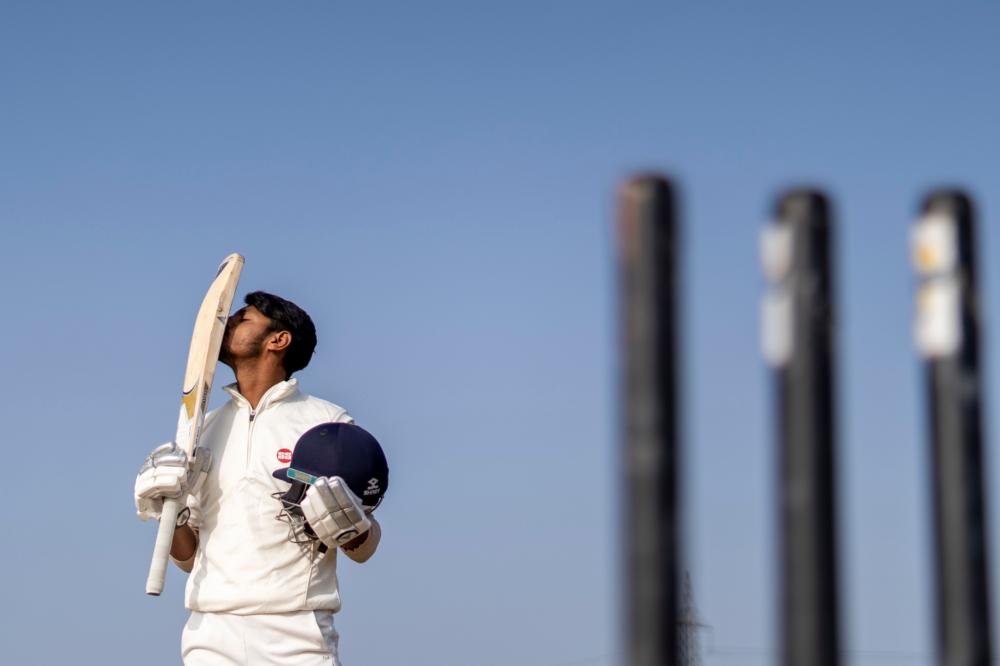

Cricket
A game of patience, skill and teamwork.

About Cricket
Cricket is a popular team sport played between two teams. The game is played with a bat and ball and is enjoyed by people in many countries around the world.
Players need batting, bowling and fielding skills to perform well. Teamwork and good planning are also important during the game.
Cricket can be played in different formats such as Test matches, One Day matches and T20 matches.
11
Players per team
22
Players in a match
3
Main formats
Why Cricket?
Cricket is exciting to watch and helps players develop teamwork, concentration and patience.
Key Skills
Batting, bowling, catching, throwing and fielding are some of the main skills used in cricket.
Cricket Events
Check the upcoming cricket matches and events on campus.